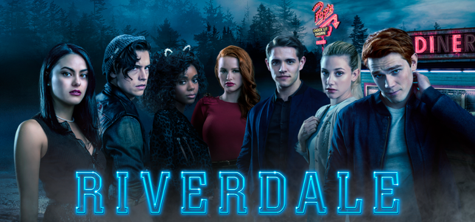
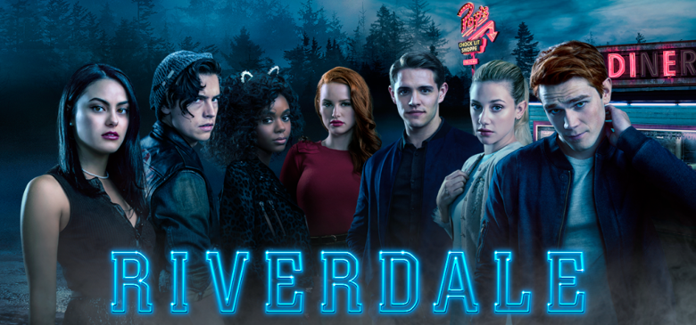
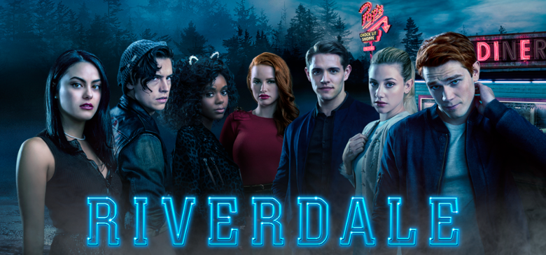
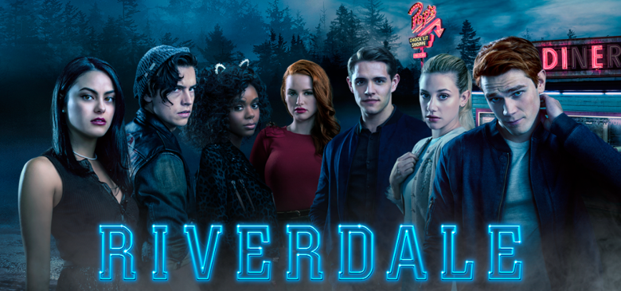

 

| |
The Deuceby George Pelecanos, David SimonIMDBb: 8.1/10, Rotten Tomatoes: 96%, Google Users: 91% Genre: Drama Description: Created by George Pelecanos and David Simon, who also collaborated on HBO's "The Wire" and "Treme," the semi fictional drama series "The Deuce" tells of the germination of the sex-trade industry in the heart of New York's Times Square. It's the early 1970s, and the porn business begins a shift from organized crime-backed parlors to a legitimate, culturally accepted enterprise. A cast of barkeeps, prostitutes, pimps, police and nightlife seekers centers around twins Vincent and Frankie Martino (James Franco, in a dual role), who navigate the sex business after meeting well-connected mobster Rudy Pipilo. Their storyline, among others, merges with that of prostitute Candy, whose ambition and intelligence lead her to a more prominent role in the industry. Running Time: 59 – 84 minutes Original Release: September 10,2017 – present Recent Release: Season 2 – November 4,2018
Cast: James Franco, Maggie Gyllenhaal, Chris Bauer, Gary Carr, Chris Coy etc.
Producers: Jessica Levin, Maggie Gyllenhaal, Mark Henry Johnson No. of Seasons: 2 No. of Episodes: 17 Comment Reviews on Season 2
|
||
| |
Riverdaleby Roberto Aguirre-SacasaIMDBb: 7.6/10, Rotten Tomatoes: 90%, Google Users: 97% Genre: Drama Description: Archie Andrews starts the school year with the world weighing on his shoulders. He's decided he wants to pursue a future in the music business, but his recently ended clandestine relationship with the music teacher has left him without a mentor, and his friendship with Jughead Jones is in a bad place. Things look like they might be turning around when Veronica Lodge, a new girl, arrives. Despite the instant chemistry, Veronica is hesitant to risk a friendship with Betty who has a crush on Archie to pursue anything. Amidst all the small-town banality lurks a mystery: the recent tragic death of Jason Blossom, the twin brother of beautiful and popular troublemaker, Cheryl. Running Time: 42 – 46 minutes Original Release: January 26,2017 – present Recent Release: Season 3 – November 14,2018
Cast:KJ Apa, Lili Reinhart, Camila Mendes, Cole Sprouse, Marisol Nichols etc.
Producer: J.B Moranville No. of Seasons: 3 No. of Episodes: 22 Comment Reviews on Season 3
|
||
| |
Manifestby Jeff RakeIMDBb: 7.6/10, Rotten Tomatoes: 58%, Google Users: 97% Genre: Drama Description: When Montego Air Flight 828 landed safely after a turbulent but routine flight, the crew and passengers were relieved. But in the span of those few hours, the world had aged five years -- and after mourning their loss, their friends, families and colleagues had given up hope and moved on. Now, faced with the impossible, they're all given a second chance. But as their new realities become clear, a deeper mystery unfolds, and some of the returned passengers soon realize they may be meant for something greater than they ever thought possible. Running Time: 43 minutes Original Release: September 24,2018 – present Recent Release: Season 1 – November 19,2018
Cast:Melissa Roxburgh, Josh Dallas, Athena Karkanis, J.R Ramirez, Luna Blaise, Jack Messina, Parveen Kaur
No. of Seasons: 1 No. of Episodes: 6 Comment Reviews on Season 1
|
||
| |
The Romanoffsby Matthew WeinerIMDBb: 7.1/10, Rotten Tomatoes: 51%, Google Users: 84% Genre: Drama Description: Emmy-winning producer Matthew Weiner ("Mad Men") created this anthology series that tells stories of people who believe that they are descendants of a Russian royal family. Each episode takes place in a new location with filming occurring on three continents with a new cast. Among the actors appearing in the hourlong instalments are Aaron Eckhart, Amanda Peet, Diane Lane, Kathryn Hahn, Noah Wyle, and "Mad Men" alumni Christina Hendricks and John Slattery. Weiner writes and directs each episode of the Amazon original series. Running Time: 63 – 88 minutes Original Release: October 12,2018 – present Recent Release: Season 1 – November 16,2018
Casts: Christina Hendricks, Hera Hilmarsdottir, Diane Lane, Kerry Bishe, Annet Mahendru etc
Producers: Semi Chellas, Matthew Weiner No. of Seasons: 1 No. of Episodes: 6 Comment Reviews on Season 1
|
||
| |
9-1-1by Ryan Murphy, Brad Falchuk, Tim MinearIMDBb: 7.5/10, Rotten Tomatoes: 85%, Google Users: 94% Genre: Drama/Action Description: Ryan Murphy, Brad Falchuk and Tim Minear reimagine the procedural drama with "9-1-1." The series explores the high-pressure experiences of first responders including police officers, firefighters and dispatchers who are thrust into the most frightening, shocking and heart-stopping situations. These emergency responders must try to balance saving those who are at their most vulnerable with solving the problems in their own lives. The show draws from real-life, high-pressure experiences of first responders who regularly face heart-stopping situations that are often unpredictable, intense and uplifting at the same time. Running Time: 45 minutes Original Release: January 3,2018 – present Recent Release: Season 2 – November 19,2018
Cast: Angela Bassett, Peter Krause, Oliver Stark, Aisha Hinds, Kenneth Choi etc
Producers: Lou Eyrich, Eryn Krueger Mekash, Adam Penn, Erica Anderson, Matthew Hodgson, Robert Williams Jr. Jeff Dickinson No. of Seasons: 2 No. of Episodes: 18 Comment Reviews on Season 2
|
||
| |
Charmedby Jessie Synder Urman, Jessica O’Toole, Amy RardinIMDBb: 3.7/10, Rotten Tomatoes: 70%, Google Users: 60% Genre: Drama/Fantasy Description: Mel and Maggie Vera suffer a shock when their mother dies suddenly, but before they have time to heal from their loss, another surprise shows up on their doorstep in the shape of an older sister brilliant geneticist Macy whom their mother never told them existed. The emotional stress takes its toll and the girls begin to exhibit impossible new abilities. An explanation comes from an unexpected place: the new chair of the women's studies department. Harry Greenwood reveals that the three are powerful witches, and he is their white lighter, there to advise and guide them as they battle dark forces. Running Time: 43 minutes Original Release: October 14,2018 – present Recent Release: Season 1 – November 18,2018
Cast: Melonie Diaz, Madeleine Mantock, Sarah Jeffery, Ser Darius Blain, Ellen Tamaki etc
Producer:Jessica O’Toole, Amy Rardin, Jennie Synder Urman, Ben Silverman, Brad Silberling etc. No. of Seasons: 1 No. of Episodes: 4 Comment Reviews on Season 2
|
||
| |
Crazy Ex-Girlfriendby Rachel Bloom, Aline Brosh McKennaIMDBb: 7.7/10, Rotten Tomatoes: 98%, Google Users: 96% Genre: Rom-com/Musical Description: Successful and driven, Rebecca Bunch seemingly has it all an upscale apartment in Manhattan and a partnership at a prestigious law firm but she feels like something is missing. After a chance meeting with a former romantic interest, Rebecca impulsively decides to give up her life in New York and relocate to West Covina, Calif., a Los Angeles suburb she hopes will be the perfect home base as she embarks on a quest for love, adventure and true happiness. Star Rachel Bloom also serves as an executive producer. Running Time: 39 – 43 minutes Original Release: October 12,2015 – present Recent Release: Season 4 – November 16,2018
Cast: Rachel Bloom, Vincent Rodriguez III, Santino Fontana, Donna Lynne Champlin, Pete Gardner etc
Producers: Matt Williams, Al Lowenstein, Sid Youngers (season 10) No. of Seasons: 4 No. of Episodes: 48 Comment Reviews on Season 4
|
||
| |
FBIby Dick Wolf, Craig TurkIMDBb: 6.1/10, Rotten Tomatoes: 62%, Google Users: 90% Genre: Drama Description: From Emmy Award winner Dick Wolf and the team behind the "Law & Order" franchise, "FBI" is a fast-paced drama about the inner workings of the New York office of the Federal Bureau of Investigation. First-class agents including Maggie Bell and Omar Adom "OA" Zidan bring all of their talents, intellect and technical expertise to tenaciously investigate cases of tremendous magnitude, including terrorism, organized crime and counterintelligence, to keep New York and the country safe. Running Time: 44 minutes Original Release: September 25,2018 – present Recent Release: Season 1 – November 13,2018
Casts: Missy Peregrym, Jeremy Sisto, Zeeko Zaki, Ebonee Noel, Sela Ward
Producer:Dick Wolf, Arthur Forney, Peter Jankowski, Craig Turk No. of Seasons: 1 No. of Episodes: 6 Comment Reviews on Season 1
|
||
| |
A Million Little Thingsby D.J NashIMDBb: 7.6/10, Rotten Tomatoes: 46%, Google Users: 96% Genre: Drama Description: It has been said that friendship isn't one big thing, it's a million little things. That is certainly true for a group of friends from Boston who bonded under unexpected circumstances. Some have achieved success, others are struggling in their careers and relationships, but all of them feel stuck in life. After one of them dies unexpectedly, it's just the wake-up call the others need to finally start living. Along the way, they discover that friends may be the one thing that can save them from themselves. Running Time: 43 minutes Original Release: September 26,2018 – present Recent Release: Season 1 – November 7,2018
Cast: David Giuntoli, Romany Malco, Allison Miller, Christina Moses, Christina Ochoa etc.
Producer: D.J Nash, Aaron Kaplan, Dana Honor, James Griffiths No. of Seasons: 1 No. of Episodes: 7 Comment Reviews on Season 1
|
||
| |
Criminal Mindsby Jeff DavisIMDBb: 8.1/10, Rotten Tomatoes: 92%, Google Users: 96% Genre: Action/Crime Drama Description: An elite squad of FBI profilers analyzes the country's most-twisted criminal minds, anticipating the perpetrators' next moves before they can strike again. Each member of the "mind hunter" team brings his or her expertise to pinpoint predators' motivations and identify emotional triggers to stop them. The core group includes an official profiler who is highly skilled at getting into the minds of criminals, a quirky genius, the former media liaison who manages to adeptly balance family life and the job, and a computer wizard. Running Time: 42 minutes Original Release: September 22,2005 – present Recent Release: Season 14 – November 21,2018
Cast: Mandy Patinkin, Thomas Gibson, Lola Glaudini, Shemar Moore, Matthew Gray Gubler etc.
Producers: Mark Gordon, Jeff Davis, Edward Allen Bernero, Deborah Spera, Chris Mundy etc. No. of Seasons: 14 No. of Episodes: 305 Comment Reviews on Season 14
|